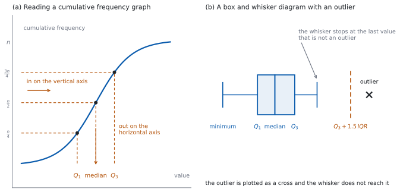
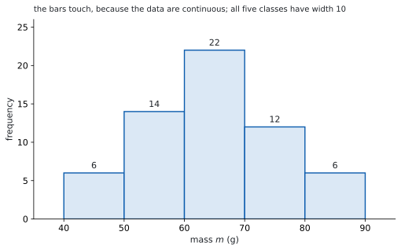
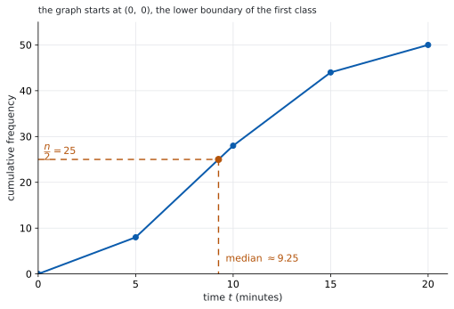
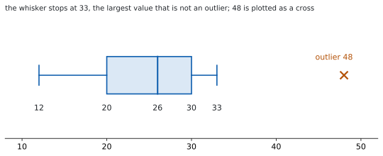

SL 4.2 — Presentation of data（データの表し方 — 度数分布・ヒストグラム・累積度数・箱ひげ図）
- frequency distribution（度数分布表）を読み、class interval（階級）の書き方が分かる。
- histogram（ヒストグラム）と棒グラフ（bar chart）のちがいを言え、なぜ棒をくっつけるのかを説明できる。
- cumulative frequency（累積度数）の表をつくり、グラフから median・quartile・percentile を読める。
- range と interquartile range を求められる。
- box and whisker diagram（箱ひげ図）をかき、外れ値を \(\times\) で示せる。
- \(2\) つの箱ひげ図を比べ、左右対称かどうかから正規分布らしさを述べられる。
The idea
1. 度数分布表
frequency distribution（度数分布表）は、値ごと、または階級ごとに個数を数えた表です。
離散データなら、値をそのまま並べます。
| \(x\) | \(0\) | \(1\) | \(2\) | \(3\) |
|---|---|---|---|---|
| frequency \(f\) | \(7\) | \(9\) | \(5\) | \(3\) |
連続データなら、class interval（階級）に分けます。IB は、階級を不等式で、すき間なく書きます。
\[ 0 \le t < 10, \qquad 10 \le t < 20, \qquad 20 \le t < 30, \ \ldots \]
すき間を作らないでください。 「\(0\)–\(9\)、\(10\)–\(19\)」のように書くと、\(9.4\) がどこにも入りません。不等式なら、どの値もちょうど \(1\) か所に入ります。
上の端は入りません。 \(10 \le t < 20\) に \(20\) は入りません。\(20\) は次の階級です。
2. histogram
histogram（ヒストグラム）は、階級ごとの度数を棒の高さで表した図です。
- 棒と棒のあいだをあけません。 階級がすき間なくつながっているからです。
- 横軸は連続な量で、目盛りは階級の境目に置きます。
- 棒グラフ（bar chart）とは別物です。 棒グラフの横軸は「種類」で、棒ははなします。
シラバスは、SL のヒストグラムを階級の幅がすべて同じものに限っています。幅が違うときに縦軸を度数密度に直す話も、次のとおり出ません。
Not required: Frequency density histograms.
3. cumulative frequency
cumulative frequency（累積度数）は、その値まで（その階級の上の端まで）に何個あるかです。上から順に足していきます。
| 階級 | \(f\) | 累積度数 |
|---|---|---|
| \(0 \le t < 10\) | \(6\) | \(6\) |
| \(10 \le t < 20\) | \(9\) | \(15\) |
| \(20 \le t < 30\) | \(4\) | \(19\) |
| \(30 \le t < 40\) | \(1\) | \(20\) |
最後は必ず \(n\) になります。 そうならなければ、足し算がまちがっています。
表 2 の \(15\) は、「\(t < 20\) である個数」です。\(t < 10\) の個数ではありません。
グラフをかくときも、点を打つのは階級の上の端です。\((20, 15)\) に打ちます。\((10, 15)\) でも \((15, 15)\) でもありません。
4. cumulative frequency graph の読み方
点を折れ線や滑らかな曲線でつなぐと、cumulative frequency graph（累積度数グラフ）になります。
読み方は、いつも「縦から入って、横に出る」です（図 1 の (a)）。
| ほしいもの | 縦軸で入る値 |
|---|---|
| median | \(\dfrac{n}{2}\) |
| \(Q_1\) | \(\dfrac{n}{4}\) |
| \(Q_3\) | \(\dfrac{3n}{4}\) |
| \(k\) 番目の percentile | \(\dfrac{k}{100} \times n\) |
この表は、累積度数グラフと、階級にまとめられた表から読むときのものです。ここでは \(n\) を使います。\(n+1\) ではありません。
値が \(1\) つずつ分かっているときは別です。 離散データの度数分布表や、並べたデータがこれにあたります。SL 4.1 と同じで、小さい順に並べて数えます。\(n\) が奇数なら median は \(\dfrac{n+1}{2}\) 番目、偶数なら \(\dfrac{n}{2}\) 番目と \(\dfrac{n}{2}+1\) 番目の平均です。\(Q_1\) と \(Q_3\) は、median で下半分と上半分に分け（\(n\) が奇数なら median は除く）、それぞれの中央値です。
どちらの表なのかを、先に見てください。
グラフがないときは、階級の中で直線とみなして計算します。位置 \(k\) がある階級について、その階級の手前までの累積度数を \(c\)、その階級の度数を \(f\) とすると
\[ (\text{階級の下端}) + \frac{k - c}{f} \times (\text{階級の幅}) \tag{1}\]
です。これは、その階級の中で値が等間隔に並んでいると考えるということです。だから答えは推定値になります。
5. range と interquartile range
- range（範囲）\(= (\text{最大値}) - (\text{最小値})\)。\(2\) つの値だけで決まります。
- interquartile range（四分位範囲）\(= Q_3 - Q_1\)。まん中の半分がどれだけ広がっているかです。
\[ \mathrm{IQR} = Q_3 - Q_1 \tag{2}\]
\(\mathrm{IQR} = Q_3 - Q_1\) は、公式集の 4.2 の欄にあります。試験中に配られるので、覚える必要はありません。
range の式は公式集にありません。 ただ、引き算をするだけです。
外れ値に強いのは \(\mathrm{IQR}\) のほうです。 range は最大値と最小値だけで決まるので、外れ値が \(1\) つあるだけで大きく変わります（SL 4.1）。
6. box and whisker diagram
box and whisker diagram（箱ひげ図）は、\(5\) つの数でかきます。外れ値がないときは、次の \(5\) つです。
\[ (\text{最小値}), \quad Q_1, \quad \text{median}, \quad Q_3, \quad (\text{最大値}) \]
箱の左右が \(Q_1\) と \(Q_3\)、箱の中の線が median、両側のひげが最小値と最大値までのびます（図 1 の (b)）。
外れ値があるときは、別あつかいです。 シラバスは、答案の書き方をこう決めています。
Outliers should be indicated with a cross.
つまり、外れ値は \(\times\) で打ちます。そして、ひげは外れ値まではのばしません。ひげの先は、外れ値でないもののうち、いちばん外側の値です。\(5\) つの数のうち両はしの \(2\) つが、最小値・最大値からこの値に変わります。
7. 左右対称かどうかを見る
箱ひげ図から、分布が正規分布らしいかどうかを述べることができます。見るのは対称性です。
- median が箱のまん中にあるか。 \(\text{median} - Q_1\) と \(Q_3 - \text{median}\) を比べます。
- \(2\) 本のひげの長さが同じくらいか。
\(2\) つとも「はい」なら、may be normally distributed と書けます。どちらかが崩れていれば、対称ではないので、正規分布とは考えにくいと書きます。
「正規分布である」と断定しないでください。 箱ひげ図が示すのは対称性だけです。答案でも may be を使います。
ctrl + doc → Add Lists & Spreadsheet にデータを入れ、
menu → Statistics → Stat Calculations → One-Variable Statisticsの MedianX・Q1X・Q3X を読みます。ctrl + doc → Add Data & Statistics で列を横軸に置けば、散らばりを図にできます。
答案に写すときは、外れ値を自分で \(\times\) にし、ひげをその手前で止めてください。 画面の見た目をそのまま写さないことです。
手で出した四分位数と、電卓の値がちがうことがあります（SL 4.1）。
Paper 1 では使えません。 このページの例題と演習は、すべて手で解ける数にしてあります。

Why it works
なぜ、累積度数の点を階級の上の端に打つのでしょうか。 階級にまとめた表では、累積度数が「その階級の上の端より小さいものの個数」だからです。\(10 \le t < 20\) の階級を足し終えた時点で分かっているのは、「\(t < 20\) であるものが \(15\) 個」ということだけです。\(t < 15\) が何個かは、表からは分かりません。だから、\(15\) という値を保証できるのは \(t = 20\) のところだけです。
下端に打つと、階級 \(1\) つぶん左にずれます。すべての読み取りが階級の幅だけ小さく出ます。
なぜ、\(\dfrac{n}{2}\) で読むのでしょうか。 累積度数グラフは、個々の値ではなく、なめらかな増え方を表しています。\(n\) 個の値が連続的に並んでいると考えるので、まん中は \(\dfrac{n}{2}\) 番目です。
\(\dfrac{n+1}{2}\) を使うのは、値を \(1\) つずつ並べて数えるときです。データを小さい順に書き出して中央値を探すなら \(\dfrac{n+1}{2}\) 番目、グラフから読むなら \(\dfrac{n}{2}\) です。\(n\) が大きいほど、\(2\) つの差は問題になりません。
なぜ、階級の中で直線とみなしてよいのでしょうか。 よいわけではありません。それしか情報がないからです。度数分布表に直した時点で、階級の中のどこに値があったかは失われています。「等間隔に並んでいる」と考えるのは、いちばん公平な当て方であって、正しい値ではありません。
だから、グループ化された表から出した median は、必ず estimate（推定値）です。もとのデータから直接求めた median とは、ふつう一致しません。
なぜ、ひげを外れ値までのばさないのでしょうか。 のばすと、外れ値が図から消えます。ひげの先が \(90\) になってしまえば、「\(90\) は \(1\) つだけ遠く離れた値だ」という情報が図から読み取れません。\(\times\) で別に打てば、「本体はここまで、\(1\) つだけ外にある」と一目で分かります。
Worked examples
問題文は英語です。意味が理解できなかったら、問題文の下の「日本語訳」を開いてください。解説は日本語です。
例題も演習も、すべて電卓なしで解けます。 Paper 1 のつもりで解いてください。
例題 1 The table shows the number of pets owned by each of \(40\) students.
| number of pets \(x\) | \(0\) | \(1\) | \(2\) | \(3\) | \(4\) |
|---|---|---|---|---|---|
| frequency \(f\) | \(8\) | \(12\) | \(15\) | \(4\) | \(1\) |
(a) Find the median, \(Q_1\) and \(Q_3\).
(b) Find the range and the interquartile range.
(c) Show that one value is an outlier.
(d) Write down the five numbers needed to draw the box and whisker diagram, and state which value is plotted as a cross.
日本語訳
表は、\(40\) 人の生徒が飼っているペットの数を示しています。
| ペットの数 \(x\) | \(0\) | \(1\) | \(2\) | \(3\) | \(4\) |
|---|---|---|---|---|---|
| 度数 \(f\) | \(8\) | \(12\) | \(15\) | \(4\) | \(1\) |
(a) 中央値、\(Q_1\)、\(Q_3\) を求めなさい。
(b) 範囲と四分位範囲を求めなさい。
(c) \(1\) つの値が外れ値であることを示しなさい。
(d) 箱ひげ図をかくのに必要な \(5\) つの数を書き、どの値が \(\times\) で打たれるかを述べなさい。
(a) 値が \(1\) つずつ分かっている表なので、小さい順に並べて数える方法を使います（SL 4.1）。表 3 の \(\dfrac{n}{2}\) は、累積度数グラフや階級にまとめた表から読むときのものです。まず累積度数を出します（第 3 節）。
\[ 8, \quad 20, \quad 35, \quad 39, \quad 40 \]
\(n = 40\) なので、median は \(20\) 番目と \(21\) 番目の平均です。累積度数から、\(20\) 番目は \(1\)、\(21\) 番目は \(2\) です。
\[ \text{median} = \frac{1 + 2}{2} = 1.5 \]
下半分（\(1\)〜\(20\) 番目）の中央値が \(Q_1\) で、\(10\) 番目と \(11\) 番目の平均です。どちらも \(1\) です。上半分（\(21\)〜\(40\) 番目）の中央値が \(Q_3\) で、\(30\) 番目と \(31\) 番目の平均です。どちらも \(2\) です。
\[ Q_1 = 1, \qquad Q_3 = 2 \]
(b)
\[ \text{range} = 4 - 0 = 4, \qquad \mathrm{IQR} = 2 - 1 = 1 \]
(c) Show that なので、境目を計算して比べます（SL 4.1）。
\[ 1.5 \times \mathrm{IQR} = 1.5, \qquad Q_3 + 1.5 = 2 + 1.5 = 3.5 \]
\(4 > 3.5\) なので、\(4\) は外れ値です。
(d) ひげは外れ値までのばしません（第 6 節）。外れ値でないもののうちいちばん大きいのは \(3\) です。
\[ 0, \quad 1, \quad 1.5, \quad 2, \quad 3 \]
\(\times\) で打つのは \(4\) です。
検算（(a) について）。 累積度数の最後を見ます。 \(8 + 12 + 15 + 4 + 1 = 40\) ✓ \(n\) と一致します。
検算（(a) について、位置）。 \(Q_1\) より下にある個数を数えます。 \(x = 0\) の \(8\) 人が \(Q_1 = 1\) より小さく、\(40\) の \(\dfrac{1}{4}\) である \(10\) に近い数です ✓ \(Q_1\) を \(0\) としてしまうと、下に \(0\) 人しかいないことになります。
検算（(c) について）。 下の境目も見ます。 \(Q_1 - 1.5 = 1 - 1.5 = -0.5\) で、最小値 \(0\) はこれより大きいので、小さいほうに外れ値はありません ✓
検算（(d) について）。 ひげの先を境目と比べます。 \(3 < 3.5\) なので \(3\) は外れ値ではなく、ひげの先にできます ✓ \(5\) つ目を \(4\) にすると \(4 > 3.5\) で、外れ値までひげがのびてしまいます。
(a) cumulative frequency: \(8, 20, 35, 39, 40\) \[\text{median} = \frac{1+2}{2} = 1.5, \qquad Q_1 = 1, \qquad Q_3 = 2\]
(b) \[\text{range} = 4, \qquad \mathrm{IQR} = 2 - 1 = 1\]
(c) \(Q_3 + 1.5 \times \mathrm{IQR} = 2 + 1.5 = 3.5\) \[4 > 3.5\] so \(4\) is an outlier
(d) five numbers: \(0, \ 1, \ 1.5, \ 2, \ 3\) the value \(4\) is plotted as a cross
例題 2 The table shows the times, in minutes, taken by \(40\) people to complete a task.
| time \(t\) | \(0 \le t < 10\) | \(10 \le t < 20\) | \(20 \le t < 30\) | \(30 \le t < 40\) | \(40 \le t < 50\) |
|---|---|---|---|---|---|
| frequency | \(5\) | \(10\) | \(15\) | \(8\) | \(2\) |
(a) Write down the cumulative frequency at the end of each class.
(b) Find \(Q_1\) and \(Q_3\), and hence the interquartile range.
(c) Estimate the median, giving your answer correct to three significant figures.
(d) Explain why the median is estimated at \(20 + \dfrac{5}{15} \times 10\) rather than at the middle of its class.
日本語訳
表は、\(40\) 人がある作業を終えるのにかかった時間（分）を示しています。
| 時間 \(t\) | \(0 \le t < 10\) | \(10 \le t < 20\) | \(20 \le t < 30\) | \(30 \le t < 40\) | \(40 \le t < 50\) |
|---|---|---|---|---|---|
| 度数 | \(5\) | \(10\) | \(15\) | \(8\) | \(2\) |
(a) 各階級の終わりにおける累積度数を書きなさい。
(b) \(Q_1\) と \(Q_3\) を求め、それをもとに四分位範囲を求めなさい。
(c) 中央値を推定し、有効数字 \(3\) 桁で答えなさい。
(d) 中央値を階級のまん中ではなく \(20 + \dfrac{5}{15} \times 10\) で推定する理由を説明しなさい。
(a) 上から足していきます（第 3 節）。
\[ 5, \quad 15, \quad 30, \quad 38, \quad 40 \]
(b) 階級にまとめられた表なので、位置は \(\dfrac{n}{4}\) と \(\dfrac{3n}{4}\) です（表 3）。グラフがないので、階級の中で直線とみなして計算します（式 1）。\(n = 40\) なので \(10\) と \(30\) です。
\(10\) 番目は \(10 \le t < 20\) の中にあります。この階級の手前までに \(5\) 個あるので、階級の中では \(5\) 番目です。
\[ Q_1 = 10 + \frac{5}{10} \times 10 = 15 \]
\(30\) 番目は、累積度数がちょうど \(30\) になるところです。それは \(t = 30\) です。
\[ Q_3 = 30 \]
\[ \mathrm{IQR} = 30 - 15 = 15 \]
(c) 位置は \(\dfrac{n}{2} = 20\) です。\(20\) 番目は \(20 \le t < 30\) の中にあり、手前までに \(15\) 個あるので、階級の中では \(5\) 番目です（式 1）。
\[ \text{median} = 20 + \frac{5}{15} \times 10 = 20 + \frac{10}{3} = \frac{70}{3} = 23.3 \ (3 \text{ s.f.}) \]
(d) Explain why なので、英語で理由を書きます。
試験ではこう書く
The position of the median is \(\dfrac{40}{2} = 20\). Fifteen values lie below the class \(20 \le t < 30\), so the median lies \(5\) of the \(15\) values into that class, one third of the way through it, not halfway. The middle of the class would be correct only if the median were halfway through it. Assuming the values are evenly spread across the class gives \(20 + \dfrac{5}{15} \times 10\).
（中央値の位置は \(\dfrac{40}{2} = 20\) である。階級 \(20 \le t < 30\) より下に \(15\) 個あるので、中央値はその階級の \(15\) 個のうち \(5\) 番目、つまり階級の \(3\) 分の \(1\) のところにあり、半分のところではない。階級のまん中を使ってよいのは、中央値がちょうど半分のところにあるときだけである。階級の中で値が等間隔に並んでいると考えると \(20 + \dfrac{5}{15} \times 10\) になる、という意味です。）
検算（(a) について）。 最後を見ます。 \(5 + 10 + 15 + 8 + 2 = 40\) ✓
検算（(b) について）。 階級で見当をつけます。 \(Q_1 = 15\) は \(10 \le t < 20\) の中、\(Q_3 = 30\) は \(20 \le t < 30\) の上端です ✓ どちらも、累積度数が \(10\) と \(30\) をまたぐ階級と合っています。
検算（(c) について）。 median が \(Q_1\) と \(Q_3\) のあいだにあるか見ます。 \(15 < 23.3 < 30\) ✓ 外れていたら、位置か階級を取りちがえています。
検算（(c) について、階級のまん中と比べます）。 階級のまん中なら \(25\) です。\(23.3\) はそれより小さく、\(20\) 番目が階級の前のほうにあることと合っています ✓ どちらでも同じ値になるのは、ちょうど半分のときだけです。
(a) \[5, \ 15, \ 30, \ 38, \ 40\]
(b) positions \(\dfrac{n}{4} = 10\) and \(\dfrac{3n}{4} = 30\) \[Q_1 = 10 + \frac{5}{10} \times 10 = 15, \qquad Q_3 = 30\] \[\mathrm{IQR} = 15\]
(c) position \(\dfrac{n}{2} = 20\) \[\text{median} = 20 + \frac{5}{15} \times 10 = 23.3 \ (3 \text{ s.f.})\]
(d) position \(\dfrac{n}{2} = 20\) and \(15\) values lie below the class, so the median is \(5\) of the \(15\) values into the class, one third of the way, not halfway
例題 3 The box and whisker diagrams for the test scores of two classes have these five-number summaries.
| minimum | \(Q_1\) | median | \(Q_3\) | maximum | |
|---|---|---|---|---|---|
| Class A | \(22\) | \(38\) | \(52\) | \(61\) | \(78\) |
| Class B | \(35\) | \(48\) | \(54\) | \(60\) | \(70\) |
(a) Find the interquartile range of each class.
(b) State which class has the greater range.
(c) State which class did better overall, giving a reason.
(d) Comment on whether the scores of Class B may be normally distributed.
日本語訳
\(2\) つのクラスのテストの点数の箱ひげ図は、次の \(5\) つの数で表されます。
| 最小値 | \(Q_1\) | 中央値 | \(Q_3\) | 最大値 | |
|---|---|---|---|---|---|
| Class A | \(22\) | \(38\) | \(52\) | \(61\) | \(78\) |
| Class B | \(35\) | \(48\) | \(54\) | \(60\) | \(70\) |
(a) それぞれのクラスの四分位範囲を求めなさい。
(b) どちらのクラスの範囲が大きいかを述べなさい。
(c) 全体としてどちらのクラスのほうがよかったかを、理由をつけて述べなさい。
(d) Class B の点数が正規分布に従うと考えられるかどうかについて述べなさい。
(a)
\[ \text{A}: \ 61 - 38 = 23, \qquad \text{B}: \ 60 - 48 = 12 \]
(b)
\[ \text{A}: \ 78 - 22 = 56, \qquad \text{B}: \ 70 - 35 = 35 \]
範囲が大きいのは Class A です。
(c) median で比べます。\(54 > 52\) なので Class B のほうがよかった、と言えます。B は \(\mathrm{IQR}\) も小さいので、点数がそろってもいます。
(d) Comment on なので、英語で述べます。\(2\) つの対称性を見ます（第 7 節）。
試験ではこう書く
For Class B the median is \(6\) above \(Q_1\) and \(6\) below \(Q_3\), so the box is symmetric about the median. The lower whisker has length \(48 - 35 = 13\) and the upper whisker has length \(70 - 60 = 10\), which are close to each other. The diagram is therefore roughly symmetric, so the scores of Class B may be normally distributed.
（Class B では中央値が \(Q_1\) より \(6\) 大きく、\(Q_3\) より \(6\) 小さいので、箱は中央値について対称である。下のひげの長さは \(48 - 35 = 13\)、上のひげの長さは \(70 - 60 = 10\) で、たがいに近い。よって図はおおむね左右対称なので、Class B の点数は正規分布に従うと考えられる、という意味です。）
検算（(a) について）。 箱の幅として見ます。 A の箱は \(38\) から \(61\)、B は \(48\) から \(60\) で、A のほうが広いです ✓ \(23 > 12\) と合っています。\(78 - 22\) を使ってしまうと、\(\mathrm{IQR}\) が range に化けます。
検算（(d) について、A と比べます）。 A は median \(-\ Q_1 = 14\)、\(Q_3 -\) median \(= 9\) で、\(5\) も違います ✓ B の \(6\) と \(6\) が「対称」と言える理由が、比べるとはっきりします。
検算（(c) について）。 median 以外でも見ます。 \(Q_1\) は \(48 > 38\) で B のほうが上、\(Q_3\) は \(60 < 61\) で A のほうがわずかに上です ✓ 「上のほうの生徒は A のほうが強い」も同時に言えるので、overall の根拠は median にします。
(a) \[\text{A}: \ 61 - 38 = 23, \qquad \text{B}: \ 60 - 48 = 12\]
(b) Class A, since \(78 - 22 = 56 > 70 - 35 = 35\)
(c) Class B, since its median \(54\) is greater than the median \(52\) of Class A
(d) the box is symmetric (\(6\) each side of the median) and the whiskers, \(13\) and \(10\), are close, so the scores may be normally distributed
例題 4 The heights, in centimetres, of \(50\) plants are grouped in this table.
| height \(h\) | \(10 \le h < 20\) | \(20 \le h < 30\) | \(30 \le h < 40\) | \(40 \le h < 50\) | \(50 \le h < 60\) |
|---|---|---|---|---|---|
| frequency | \(3\) | \(9\) | \(18\) | \(15\) | \(5\) |
(a) Write down the number of plants with a height less than \(40\) cm.
(b) Write down the cumulative frequency at the end of each class.
(c) Estimate the \(90\)th percentile.
(d) Explain why the answer to part (c) is an estimate rather than an exact value.
日本語訳
\(50\) 本の植物の高さ（cm）が、次の表にまとめられています。
| 高さ \(h\) | \(10 \le h < 20\) | \(20 \le h < 30\) | \(30 \le h < 40\) | \(40 \le h < 50\) | \(50 \le h < 60\) |
|---|---|---|---|---|---|
| 度数 | \(3\) | \(9\) | \(18\) | \(15\) | \(5\) |
(a) 高さが \(40\) cm 未満の植物の本数を書きなさい。
(b) 各階級の終わりにおける累積度数を書きなさい。
(c) \(90\) パーセンタイルを推定しなさい。
(d) (c) の答えが正確な値ではなく推定値である理由を説明しなさい。
(a) 「\(40\) cm 未満」は、\(30 \le h < 40\) までの累積度数です。
\[ 3 + 9 + 18 = 30 \]
(b)
\[ 3, \quad 12, \quad 30, \quad 45, \quad 50 \]
(c) \(90\) パーセンタイルの位置は \(\dfrac{90}{100} \times 50 = 45\) です（表 3）。累積度数がちょうど \(45\) になるのは \(h = 50\) のところです。
\[ 90\text{th percentile} = 50 \ \text{cm} \]
(d) Explain why なので、英語で理由を書きます。
試験ではこう書く
The table records only how many plants fall in each class, not the individual heights, so the heights within a class are no longer known. Any value read from the table assumes that the values are evenly spread across each class, which need not be true. The answer is therefore an estimate, and it would change if the original heights were used.
（表は各階級に何本入るかだけを記録していて、\(1\) 本ずつの高さは記録していないので、階級の中の高さはもう分からない。表から読んだ値は、階級の中で値が等間隔に並んでいると仮定しており、それが成り立つとはかぎらない。よって答えは推定値であり、もとの高さを使えば変わりうる、という意味です。）
検算（(b) について）。 最後を見ます。 \(3 + 9 + 18 + 15 + 5 = 50\) ✓
検算（(c) について、位置）。 \(50\) の \(90\%\) で見ます。 上から \(10\%\)、つまり \(5\) 本が \(90\) パーセンタイルより上にあるはずです。\(50 \le h < 60\) の度数はちょうど \(5\) です ✓
検算（(c) について、階級）。 median と比べます。 median の位置は \(25\) で、\(30 \le h < 40\) の中に入ります。\(90\) パーセンタイルは median より大きくなければなりません。\(50 > 40\) ✓
(a) \[3 + 9 + 18 = 30\]
(b) \[3, \ 12, \ 30, \ 45, \ 50\]
(c) position \(= 0.9 \times 50 = 45\) \[90\text{th percentile} = 50 \text{ cm}\]
(d) the table gives only the class of each plant, so the values inside a class are unknown and are assumed to be evenly spread
Common errors
「\(0\)–\(9\)、\(10\)–\(19\)」では \(9.4\) がどこにも入りません（第 1 節）。不等式で、すき間なく書きます。
階級はつながっているので、棒もくっつけます（第 2 節）。棒グラフとは別物です。
点を打つのは上の端です（第 3 節）。下端に打つと、すべての読み取りが階級 \(1\) つぶんずれます。
階級の中のどこにあるかを、位置から計算します（式 1）。まん中でよいのは、ちょうど半分のときだけです。
ひげの先は、外れ値でないもののうちいちばん外側の値です（第 6 節）。外れ値は \(\times\) で打ちます。
Exercises
各問題に、折りたたみが \(3\) つ付いています。日本語訳、解答例（答案用紙に書くべきこと。英語です）、解説（なぜそうなるか。日本語です）。
まず自分で解いて、次に解答例と見くらべてください。解説は、合わなかったときだけ開けば十分です。
1 The table shows the number of siblings of each of \(30\) students. Find the median, \(Q_1\), \(Q_3\), the range and the interquartile range.
| number of siblings \(x\) | \(0\) | \(1\) | \(2\) | \(3\) | \(4\) | \(5\) |
|---|---|---|---|---|---|---|
| frequency \(f\) | \(4\) | \(7\) | \(9\) | \(6\) | \(3\) | \(1\) |
日本語訳
表は、\(30\) 人の生徒それぞれのきょうだいの人数を示しています。中央値、\(Q_1\)、\(Q_3\)、範囲、四分位範囲を求めなさい。
| きょうだいの人数 \(x\) | \(0\) | \(1\) | \(2\) | \(3\) | \(4\) | \(5\) |
|---|---|---|---|---|---|---|
| 度数 \(f\) | \(4\) | \(7\) | \(9\) | \(6\) | \(3\) | \(1\) |
cumulative frequency: \(4, \ 11, \ 20, \ 26, \ 29, \ 30\)
\[\text{median} = 2, \qquad Q_1 = 1, \qquad Q_3 = 3\]
\[\text{range} = 5, \qquad \mathrm{IQR} = 3 - 1 = 2\]
\(n = 30\) なので median は \(15\) 番目と \(16\) 番目の平均です。累積度数から、どちらも \(2\) です。下半分の中央値 \(Q_1\) は \(8\) 番目、上半分の中央値 \(Q_3\) は \(23\) 番目です。
検算。 合計を見ます。 \(4+7+9+6+3+1 = 30\) ✓
検算（位置）。 累積度数がまたぐところを見ます。 \(Q_1\) の位置 \(8\) は、累積度数が \(4\) から \(11\) に増えるあいだにあるので \(x = 1\)、\(Q_3\) の位置 \(23\) は \(20\) から \(26\) に増えるあいだにあるので \(x = 3\) です ✓ \(Q_1 = 0\) や \(Q_3 = 2\) にはなりません。
\(x\) と \(f\) を取りちがえないでください。 中央値は「きょうだいの人数」であって、度数ではありません。
2 The masses, in grams, of \(60\) apples are grouped as shown.
| mass \(m\) | \(40 \le m < 50\) | \(50 \le m < 60\) | \(60 \le m < 70\) | \(70 \le m < 80\) | \(80 \le m < 90\) |
|---|---|---|---|---|---|
| frequency | \(6\) | \(14\) | \(22\) | \(12\) | \(6\) |
(a) Draw a histogram for these data, labelling both axes.
(b) Write down the class that contains the median.
日本語訳
\(60\) 個のりんごの質量（g）が、次のようにまとめられています。
| 質量 \(m\) | \(40 \le m < 50\) | \(50 \le m < 60\) | \(60 \le m < 70\) | \(70 \le m < 80\) | \(80 \le m < 90\) |
|---|---|---|---|---|---|
| 度数 | \(6\) | \(14\) | \(22\) | \(12\) | \(6\) |
(a) このデータのヒストグラムをかき、両方の軸にラベルをつけなさい。
(b) 中央値を含む階級を書きなさい。
(a) five bars of equal width that touch, with frequency on the vertical axis and mass on the horizontal axis

(b) cumulative frequency: \(6, \ 20, \ 42, \ 54, \ 60\)
\[\text{position} = \frac{60}{2} = 30\]
\[60 \le m < 70\]
(a) 棒はくっつけます（第 2 節）。質量は連続な量なので、階級と階級のあいだにすき間はありません。ここでは階級の幅がすべて \(10\) でそろっているので、縦軸は度数のままでかまいません。
軸にラベルを付けてください。 「mass \(m\) (g)」と「frequency」の \(2\) つです。
(b) 位置 \(30\) は、累積度数が \(20\) から \(42\) に増える階級の中にあります（表 3）。
検算（(a) の合計）。 棒の高さを足すと \(6+14+22+12+6 = 60\) ✓ 全体の個数に一致します。
検算（(b) 前後の階級）。 \(50 \le m < 60\) までで \(20\) 個しかなく、\(30\) に足りません。\(60 \le m < 70\) までで \(42\) 個あり、\(30\) をこえています ✓
検算（図と答えが合うか）。 いちばん高い棒は \(60 \le m < 70\) で、これが modal class です。median を含む階級も同じでした ✓ いつも同じになるとはかぎりませんが、ここでは一致しています。
階級を「\(60\)」とだけ書かないでください。 聞かれているのは階級なので、\(60 \le m < 70\) と書きます。
3 The table shows the waiting times, in minutes, of \(50\) customers.
| time \(t\) | \(0 \le t < 5\) | \(5 \le t < 10\) | \(10 \le t < 15\) | \(15 \le t < 20\) |
|---|---|---|---|---|
| frequency | \(8\) | \(20\) | \(16\) | \(6\) |
(a) Draw a cumulative frequency graph for these data.
(b) Use your graph to estimate the median.
日本語訳
表は、\(50\) 人の客の待ち時間（分）を示しています。
| 時間 \(t\) | \(0 \le t < 5\) | \(5 \le t < 10\) | \(10 \le t < 15\) | \(15 \le t < 20\) |
|---|---|---|---|---|
| 度数 | \(8\) | \(20\) | \(16\) | \(6\) |
(a) このデータの累積度数グラフをかきなさい。
(b) そのグラフから中央値を推定しなさい。
(a) points \((0, \ 0), \ (5, \ 8), \ (10, \ 28), \ (15, \ 44), \ (20, \ 50)\)

(b)
\[\text{position} = \frac{50}{2} = 25\]
\[\text{median} = 5 + \frac{17}{20} \times 5 = 9.25 \text{ minutes}\]
(a) 点を打つ \(x\) は、階級の上側の境界です。 \(t < 5\) までで \(8\) 人なので \((5, 8)\)、\(t < 10\) までで \(28\) 人なので \((10, 28)\)、… となります。
最初の点は \((0, 0)\) です。 いちばん小さい階級の下側の境界で、そこまでの累積度数は \(0\) だからです。ここを忘れると、左端が浮いた図になります。
(b) 縦軸の \(\dfrac{n}{2} = 25\) から入り、グラフに当ててから下におります（表 3）。読み取ると \(9.25\) 分ほどです。
計算でも出せます。\(25\) 番目は \(5 \le t < 10\) の中で、この階級の手前までに \(8\) 人いるので、階級の中では \(25 - 8 = 17\) 番目です（式 1）。
この読み取りは、階級の中で値が均等に分布しているとみなしています。 実際にどう散らばっているかは表からは分かりません。だから答えは「推定」です。
検算。 階級の中に収まっているか見ます。 \(5 < 9.25 < 10\) ✓
検算（位置）。 \(\dfrac{17}{20}\) は \(1\) に近いので、答えは階級の上のほうになるはずです。\(9.25\) は \(5\) と \(10\) の上のほうです ✓
検算（図と計算）。 グラフから読んだ値と、式で出した \(9.25\) が合っています ✓ どちらかだけだと、読みまちがいに気づけません。
\(8\) を引き忘れないでください。 \(\dfrac{25}{20}\) としてしまうと、\(1\) より大きくなり、階級からはみ出します。
4 The table shows the results of a survey of \(80\) people. Estimate \(Q_1\) and \(Q_3\), and hence the interquartile range.
| value \(x\) | \(0 \le x < 10\) | \(10 \le x < 20\) | \(20 \le x < 30\) | \(30 \le x < 40\) |
|---|---|---|---|---|
| frequency | \(8\) | \(24\) | \(32\) | \(16\) |
日本語訳
表は、\(80\) 人への調査の結果を示しています。\(Q_1\) と \(Q_3\) を推定し、それをもとに四分位範囲を求めなさい。
| 値 \(x\) | \(0 \le x < 10\) | \(10 \le x < 20\) | \(20 \le x < 30\) | \(30 \le x < 40\) |
|---|---|---|---|---|
| 度数 | \(8\) | \(24\) | \(32\) | \(16\) |
cumulative frequency: \(8, \ 32, \ 64, \ 80\)
\[Q_1: \ \text{position} = 20, \qquad Q_1 = 10 + \frac{12}{24} \times 10 = 15\]
\[Q_3: \ \text{position} = 60, \qquad Q_3 = 20 + \frac{28}{32} \times 10 = 28.75\]
\[\mathrm{IQR} = 28.75 - 15 = 13.75\]
位置は \(\dfrac{n}{4} = 20\) と \(\dfrac{3n}{4} = 60\) です（表 3）。それぞれ \(10 \le x < 20\) と \(20 \le x < 30\) の中に入ります。
検算。 \(Q_1 < Q_3\) か見ます。 \(15 < 28.75\) ✓ 逆になっていたら、位置を取りちがえています。
検算（割合）。 \(Q_1\) より下にくる個数を数えます。 階級の手前までに \(8\) 個、階級の中で \(\dfrac{12}{24}\) すなわち \(12\) 個なので、合わせて \(20\) 個 ✓ 位置の \(20\) と一致します。\(\dfrac{20}{24}\) としていたら \(8 + 20 = 28\) 個になり、\(20\) と合いません。
\(\dfrac{20}{24}\) としないでください。 階級の手前までの \(8\) を引きます。
5 The values
\[ 12, \ 18, \ 20, \ 22, \ 25, \ 26, \ 27, \ 29, \ 30, \ 33, \ 48 \]
are to be shown in a box and whisker diagram.
(a) Write down the five numbers used to draw it, and state which value is plotted as a cross.
(b) Draw the box and whisker diagram on a scale from \(10\) to \(50\).
日本語訳
次の値を箱ひげ図に表します。
\[ 12, \ 18, \ 20, \ 22, \ 25, \ 26, \ 27, \ 29, \ 30, \ 33, \ 48 \]
(a) 図をかくのに使う \(5\) つの数を書き、どの値が \(\times\) で打たれるかを述べなさい。
(b) \(10\) から \(50\) の目盛りの上に、箱ひげ図をかきなさい。
(a)
\[Q_1 = 20, \quad \text{median} = 26, \quad Q_3 = 30, \quad \mathrm{IQR} = 10\]
\[Q_3 + 1.5 \times 10 = 45, \qquad 48 > 45\]
five numbers: \(12, \ 20, \ 26, \ 30, \ 33\)
the value \(48\) is plotted as a cross
(b)

(a) \(n = 11\) で奇数なので median は \(6\) 番目の \(26\) です。median を除いて下半分（\(5\) 個）と上半分（\(5\) 個）に分けるので、\(Q_1\) は \(3\) 番目、\(Q_3\) は \(9\) 番目です（SL 4.1 の手順 \(1\)）。外れ値の境目を計算してから、\(5\) つの数を決めます（第 6 節）。
(b) ひげの先と外れ値を、はっきり分けてかきます。 右のひげは \(33\) で止め、\(48\) は離れたところに \(\times\) で打ちます。ひげを \(48\) までのばすと、外れ値が外れ値に見えなくなります。
目盛りを付けてください。 \(10\) から \(50\) の数直線がないと、箱の位置が読めません。
検算。 下の境目も見ます。 \(20 - 15 = 5\) で、最小値 \(12\) はこれより大きいので、小さいほうに外れ値はありません ✓ だからひげの左端は \(12\) のままです。
検算（ひげの先）。 \(33\) は \(45\) より小さいので外れ値ではありません ✓ ひげの右端は \(33\) です。
検算（箱の幅）。 箱の左端から右端までが \(\mathrm{IQR} = 30 - 20 = 10\) です ✓ 図の上でも \(10\) 目盛りぶんになっているか確かめます。
\(5\) つ目を \(48\) にしないでください。 ひげは外れ値までのばしません。
6 Two shops record the number of minutes customers wait. The five-number summaries are: Shop P — \(2, 5, 8, 12, 20\); Shop Q — \(4, 7, 9, 11, 15\). Comment on which shop a customer who dislikes waiting should choose.
日本語訳
\(2\) つの店が、客の待ち時間（分）を記録しました。\(5\) つの数は、Shop P が \(2, 5, 8, 12, 20\)、Shop Q が \(4, 7, 9, 11, 15\) です。待たされるのが嫌いな客はどちらの店を選ぶべきかについて述べなさい。
\[\mathrm{IQR}_P = 12 - 5 = 7, \qquad \mathrm{IQR}_Q = 11 - 7 = 4\]
Shop Q: its waiting times are much more consistent, and its longest wait is \(15\) against \(20\)
(Shop P is also accepted, provided the figures are quoted: its median is \(8\) against \(9\) and its lower quartile is \(5\) against \(7\), so a quarter of its customers are served within \(5\) minutes.)
Comment on なので、数を挙げて述べます。median は P のほうが小さい（\(8 < 9\)）のに、散らばりと最大値では Q が優れています。どちらの店を選んでも正解になります。 採点されるのは、挙げた数と、そこからの筋道です。
Q を選ぶなら IQR と最大値を、P を選ぶなら median と \(Q_{1}\) を挙げます。数を挙げずに「なんとなく Q」とだけ書くのは、Comment on の答えになっていません。
検算。 \(2\) つの見方を比べます。 median だけなら P、散らばりと最大値なら Q です ✓ どちらの立場かを、はっきり書く必要があります。
検算（範囲）。 P は \(20 - 2 = 18\)、Q は \(15 - 4 = 11\) ✓ Q のほうがそろっています。
試験ではこう書く
Shop P has the smaller median, \(8\) against \(9\), so a typical wait is shorter there. However Shop P is much less consistent: its interquartile range is \(7\) against \(4\), and its longest recorded wait is \(20\) minutes against \(15\). A customer who dislikes waiting cares about the long waits rather than the typical one, so Shop Q is the better choice.
7 Explain why class intervals for continuous data are written as inequalities such as \(10 \le t < 20\) rather than as \(10\)–\(19\).
日本語訳
連続データの階級を、\(10\)–\(19\) ではなく \(10 \le t < 20\) のような不等式で書く理由を説明しなさい。
continuous data can take any value, so \(10\)–\(19\) leaves values such as \(19.4\) in no class; inequalities with no gaps put every value in exactly one class
Explain why なので、どの値が困るのかを \(1\) つ挙げます（第 1 節）。
検算。 境目の値で試します。 \(10 \le t < 20\) と \(20 \le t < 30\) なら、\(20\) は \(2\) つ目だけに入ります ✓ 重なりもすき間もありません。
「見やすいから」ではありません。 分類できない値が出るかどうかの問題です。
試験ではこう書く
Continuous data can take any value between the whole numbers, so a class written as \(10\)–\(19\) does not say where a value such as \(19.4\) belongs. Writing the classes as inequalities with no gaps, such as \(10 \le t < 20\) and \(20 \le t < 30\), means that every possible value lies in exactly one class, with no gap and no overlap at the boundaries.
8 A student has a cumulative frequency graph for \(60\) values. To estimate \(Q_3\) the student calculates \(\dfrac{3}{4} \times 60 = 45\) and finds the point on the horizontal axis where \(x = 45\). Identify the error, and describe what should be done instead.
日本語訳
ある生徒が、\(60\) 個の値の累積度数グラフを持っています。\(Q_3\) を推定するために \(\dfrac{3}{4} \times 60 = 45\) を計算し、横軸で \(x = 45\) となる点を探しました。誤りを指摘し、代わりに何をすべきかを述べなさい。
\(45\) is a position, not a value of \(x\); it must be found on the vertical (cumulative frequency) axis, then read across to the curve and down to the horizontal axis
Identify the error なので、どこが違うのかを名指しします（第 4 節）。\(45\) は「\(45\) 番目」という個数であって、データの値ではありません。
検算。 単位で見ます。 横軸の単位が分や cm なら、\(45\) 個という個数をそこに置くことはできません ✓ 軸がちがいます。
検算（順番）。 正しくは「縦から入って、横に出る」です ✓ 生徒は横から入っています。
試験ではこう書く
The number \(45\) is a position in the ordered data, not a value of the variable, so it does not belong on the horizontal axis. It should be found on the vertical axis, which measures cumulative frequency. From there the student should read across to the curve and then down to the horizontal axis; the value read off there is the estimate of \(Q_3\).
9 A box and whisker diagram has minimum \(30\), \(Q_1 = 44\), median \(47\), \(Q_3 = 56\) and maximum \(70\). Comment on whether the data may be normally distributed.
日本語訳
ある箱ひげ図の最小値は \(30\)、\(Q_1 = 44\)、中央値 \(47\)、\(Q_3 = 56\)、最大値は \(70\) です。このデータが正規分布に従うと考えられるかどうかについて述べなさい。
median \(- \ Q_1 = 3\) but \(Q_3 -\) median \(= 9\), so the box is not symmetric and the data are unlikely to be normally distributed
見るのは \(2\) つです（第 7 節）。ひげは \(44 - 30 = 14\) と \(70 - 56 = 14\) で同じですが、箱が対称ではありません。
検算。 両方を確かめます。 ひげだけを見て「対称」と答えると、箱の \(3\) と \(9\) を見落とします ✓ どちらか一方でも崩れていれば、対称とは言えません。
検算（外れ値）。 \(\mathrm{IQR} = 12\)、境目は \(44 - 18 = 26\) と \(56 + 18 = 74\) です。最小値 \(30\) も最大値 \(70\) も内側なので、外れ値はありません ✓ ひげはそのままのびます。
試験ではこう書く
The two whiskers have the same length, \(44 - 30 = 14\) and \(70 - 56 = 14\), which suggests symmetry. However the median is only \(3\) above \(Q_1\) and \(9\) below \(Q_3\), so the middle half of the data is not symmetric about the median. Since symmetry fails inside the box, the data are unlikely to be normally distributed.
10 A histogram is drawn with frequency on the vertical axis, but the class intervals do not all have the same width. State one way in which a histogram differs from a bar chart. Explain also why this histogram may give a misleading impression of the data.
日本語訳
縦軸に度数をとってヒストグラムをかきましたが、階級の幅がすべて同じではありません。ヒストグラムが棒グラフと違う点を \(1\) つ述べなさい。また、このヒストグラムがデータについて誤った印象を与えうる理由を説明しなさい。
a histogram has a continuous quantity on the horizontal axis and the bars touch, while a bar chart shows separate categories with gaps between the bars
the eye compares areas, so a wide class looks more crowded than it is; with equal widths the height and the area give the same comparison
Explain why なので、何を見まちがえるのかを書きます（第 2 節）。
検算。 数で試します。 幅 \(10\) に \(20\) 個の階級と、幅 \(20\) に \(20\) 個の階級は、高さが同じ \(20\) でも面積は \(2\) 倍になります ✓ 密度は半分なのに、\(2\) 倍こんでいるように見えます。
SL では、この直し方（度数密度）は問われません（第 2 節）。ここで聞かれているのは、なぜ幅をそろえるのかです。
試験ではこう書く
In a histogram the bars touch, so the eye reads the area of each bar as the amount of data in that class. If one class is twice as wide as another and both bars have the same height, the wider bar has twice the area, and looks as though it contains twice as much data, when in fact the two classes contain the same number of values. Equal class widths remove this problem.